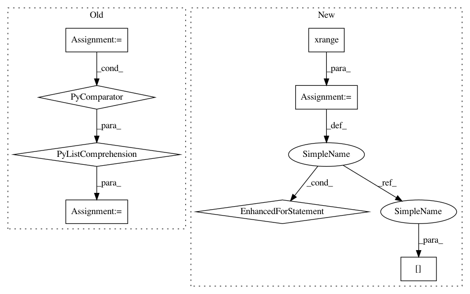

ab7bfeb252d0c9cbc4cd44a50f7757a53dbd7ecb,lightning/dual_cd.py,DualLinearSVC,fit,#DualLinearSVC#Any#Any#,25
Before Change
rs = check_random_state(self.random_state)
self.label_binarizer_ = LabelBinarizer(neg_label=-1, pos_label=1)
Y = self.label_binarizer_.fit_transform(y)
W = [_dual_cd(X, Y[:, i],
self.C, self.loss, self.max_iter, rs, self.tol,
precomputed_kernel=False, verbose=self.verbose) \
for i in range(Y.shape[1])]
self.coef_ = np.array(W)
def decision_function(self, X):
return np.dot(X, self.coef_.T)
After Change
n_vectors = Y.shape[1]
self.coef_ = np.zeros((n_vectors, n_features), dtype=np.float64)
for i in xrange(n_vectors):
_dual_cd(self.coef_[i], X, Y[:, i],
self.C, self.loss, self.max_iter, rs, self.tol,
precomputed_kernel=False, verbose=self.verbose)
def decision_function(self, X):
return np.dot(X, self.coef_.T)
def predict(self, X):
In pattern: SUPERPATTERN
Frequency: 3
Non-data size: 8
Instances
Project Name: scikit-learn-contrib/lightning
Commit Name: ab7bfeb252d0c9cbc4cd44a50f7757a53dbd7ecb
Time: 2012-02-29
Author: mathieu@mblondel.org
File Name: lightning/dual_cd.py
Class Name: DualLinearSVC
Method Name: fit
Project Name: scikit-learn-contrib/lightning
Commit Name: ab7bfeb252d0c9cbc4cd44a50f7757a53dbd7ecb
Time: 2012-02-29
Author: mathieu@mblondel.org
File Name: lightning/dual_cd.py
Class Name: DualSVC
Method Name: fit
Project Name: geekcomputers/Python
Commit Name: 139259ac8ac83160502cbb896371ce4fa4027361
Time: 2019-10-10
Author: ml.smiley3@gmail.com
File Name: primelib/primelib.py
Class Name:
Method Name: sieveEr